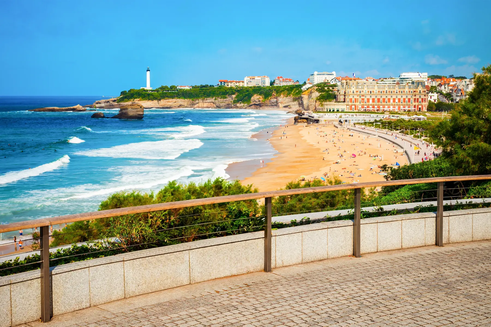
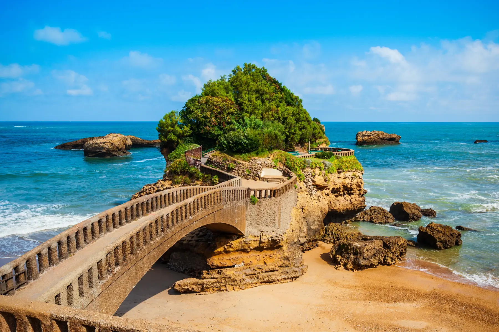
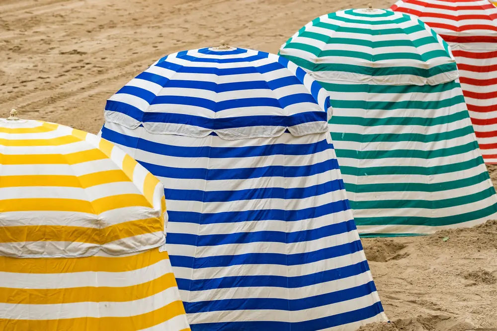
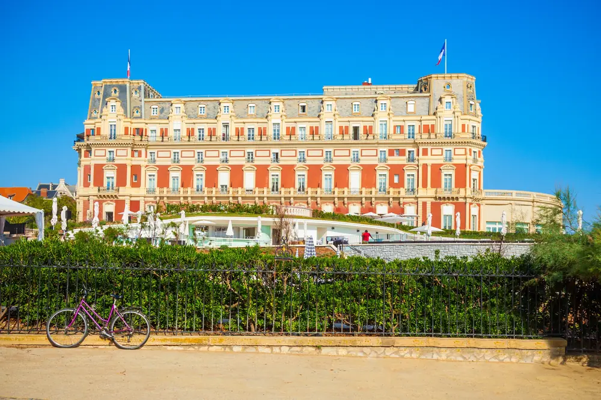
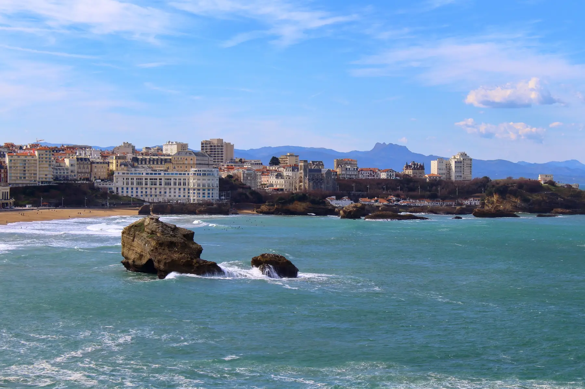
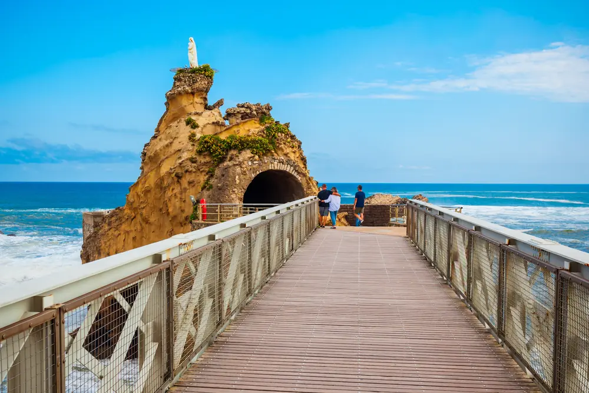
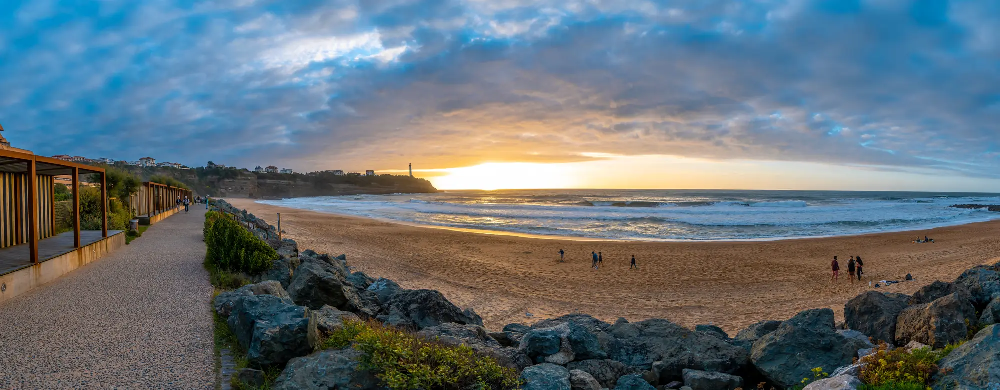

Vivir en Biarritz, entre el océano y la ciudad

Biarritz se mira primero desde el océano, pero se vive mucho más allá de sus playas. A pocos minutos de distancia se pasa del centro y de Les Halles a las calles de Saint-Charles, de Bibi-Beaurivage a los barrios más residenciales de la Milady, del Parc d'Hiver o del Lac Marion.
Habitar Biarritz
Elegir una vivienda en Biarritz no es, por tanto, solo elegir una dirección o una vista. Es elegir una manera de vivir aquí todo el año: a pie en el centro, cerca del océano, en una casa más tranquila, o en medio de un barrio donde escuelas, comercios y servicios cuentan tanto como el paisaje.
El océano no es un decorado
En Biarritz, el océano impone su ritmo. El oleaje, el viento, las mareas y las estaciones cambian la ciudad tanto como la luz. Se camina, se nada, se surfea, se mira el mar, y al final acaba formando parte de la vida diaria.
El surf merece un lugar aparte. Aquí no funciona como una simple imagen de destino turístico: atraviesa las generaciones, las escuelas, los comercios y las costumbres locales.

Lo bello, y luego lo real
Biarritz atrae por su carácter, pero vivir o comprar aquí obliga también a mirar las cifras: quién vive en la ciudad, cuántas viviendas están ocupadas todo el año, qué parte corresponde a las residencias secundarias, qué servicios existen realmente, cuánto cuesta una vivienda y qué puede rendir razonablemente una inversión en alquiler.
Biarritz, lo que dicen las cifras
Biarritz cuenta con 25.810 habitantes. La estructura por edades es la primera cifra que conocer: el 44,6 % de los biarrotas tiene 60 años o más (11.520 personas), y el 9,4 % tiene menos de 15 años (2.437 niños). Es el perfil de las grandes estaciones costeras, donde la gente se instala para quedarse: en Francia, los mayores de 60 representan el 27,0 % de la población, y los menores de 15 el 17,3 %.
Fuente: INSEE, censo de población 2022, bases infracomunales (IRIS). Partes de Francia calculadas sobre la misma base (Francia sin Mayotte).
Es la cifra emblemática de la ciudad: Biarritz tiene más viviendas que habitantes (26.387 viviendas para 25.810 habitantes). Las residencias secundarias y ocasionales representan el 40,7 % del parque, es decir 10.750 viviendas. Es ante todo una cifra de atractivo, y es la que explica gran parte de la tensión de los precios: en Francia, las residencias secundarias representan el 9,7 % del parque, más de cuatro veces menos. A la inversa, las viviendas vacías son raras: el 2,1 % del parque, frente al 8,0 % en Francia, señal de una ciudad donde una vivienda siempre encuentra comprador.
La media comunal esconde un gradiente muy claro: del simple al cuádruple entre el Centro Ciudad · Les Halles (61,5 %) y Lac Marion (16,8 %). Y dentro del propio Centro, el sector del frente de mar sube al 72,2 % de residencias secundarias. Barrio a barrio:
| Barrio | Habitantes | Viviendas | Res. secundarias |
|---|---|---|---|
| Centro Ciudad · Les Halles | 3.746 | 6.573 | 61,5 % |
| Bibi-Beaurivage | 1.520 | 2.063 | 51,2 % |
| Barrio Imperial · Saint-Charles | 4.177 | 5.697 | 50,1 % |
| Barrio de la Milady | 3.745 | 3.015 | 26,6 % |
| Parc d'Hiver · Braou | 7.571 | 5.822 | 25,0 % |
| Lac Marion | 5.051 | 3.217 | 16,8 % |
Fuente: INSEE, censo 2022, bases de vivienda y población a nivel IRIS (geografía a 1 de enero de 2024). Partes de Francia calculadas sobre la misma base (Francia sin Mayotte). Barrios del sitio = agrupaciones de IRIS; correspondencia detallada en cada página de barrio.


Servicios útiles
El INSEE censa 2.528 equipamientos en Biarritz en 2025, aproximadamente uno por cada diez habitantes. Y una cifra dice cuánto atrae la ciudad: 218 agencias inmobiliarias, una por cada 118 habitantes, más que las panaderías (42), las farmacias (19) y los médicos de cabecera (53) juntos. La densidad supera la referencia nacional en todas estas líneas: Francia cuenta con una agencia inmobiliaria por cada 610 habitantes, y un frontón por cada casi 25.000.
Fuente: INSEE, Base permanente des équipements 2025 (geografía a 1 de enero de 2025), fichero de detalle geolocalizado. Ratios calculados sobre la población municipal de 2022; ratios de Francia calculados sobre la misma BPE y la población de Francia de la misma base 2022 (sin Mayotte). Detalle por barrio en cada página de barrio.

Lo que cuesta
Sobre las ventas notariales 2024–2025, el precio medio en Biarritz es de 7.591 €/m² para un apartamento y 9.421 €/m² para una casa. Según el barrio, la media de los apartamentos va de 5.407 €/m² en Lac Marion a 8.321 €/m² en el Centro Ciudad · Les Halles. El detalle, barrio a barrio:
Fuente: DVF (DGFiP / Cerema, Licencia Abierta 2.0), 6.304 ventas 2019–2025, extracciones de julio y agosto de 2026, cálculos de Biarritz.immo. Precios medios sobre las ventas de 2024–2025.

Comprar para alquilar
Todo se reduce a una pregunta sencilla: ¿cuánto rinde cada año el dinero invertido en la vivienda? Es lo que se llama la rentabilidad bruta, y cabe en una línea: el alquiler de un mes, multiplicado por doce para hacer un año, dividido por el precio de compra. Una rentabilidad del 4 % significa 4.000 € de alquileres cobrados en el año por 100.000 € invertidos.
En la costa vasca la regla es clara: cuanto más cara es una ciudad para comprar, menos rinde. Entre Bayonne y Biarritz los alquileres solo varían alrededor de una quinta parte, mientras que los precios de compra casi se duplican. Esa diferencia lo decide todo: un apartamento rinde un 4,0 % anual en Bayonne frente al 2,6 % en Biarritz. Comprar en Biarritz se juega, por tanto, más en el valor del bien con el tiempo que en el alquiler que produce.
| Apartamentos | Alquiler mensual | Precio de compra | Rentabilidad bruta |
|---|---|---|---|
| Bayonne | 13,79 €/m² | 4.115 €/m² | 4,0 % |
| Anglet | 15,25 €/m² | 5.357 €/m² | 3,4 % |
| Biarritz | 16,39 €/m² | 7.591 €/m² | 2,6 % |
| Casas | Alquiler mensual | Precio de compra | Rentabilidad bruta |
|---|---|---|---|
| Bayonne | 14,73 €/m² | 5.157 €/m² | 3,4 % |
| Anglet | 17,09 €/m² | 7.611 €/m² | 2,7 % |
| Biarritz | 17,91 €/m² | 9.421 €/m² | 2,3 % |
Estos porcentajes son órdenes de magnitud, no una promesa de ingresos. La rentabilidad bruta no descuenta nada: ni los gastos de comunidad, ni el impuesto sobre bienes inmuebles, ni las obras, ni los meses en que la vivienda queda vacía entre dos inquilinos, ni los impuestos sobre los alquileres percibidos. Una vez descontado todo eso, lo que queda realmente es bastante más bajo. Dos precauciones más: el alquiler publicado aquí incluye los gastos, lo que infla algo el resultado, y se mide en el conjunto de la ciudad. Un estudio frente a la Grande Plage no se alquila como un piso de tres habitaciones en Lac Marion.
Fuentes: alquileres, Carte des loyers 2025 (ANIL y Ministerio de Vivienda, a partir de 9,1 millones de anuncios, alquiler con gastos incluidos, €/m² al mes); precios, ventas notariales DVF 2024–2025, media municipal, extracción del 6 de agosto de 2026, cálculos de Biarritz.immo. Rentabilidad bruta = alquiler × 12 / precio, antes de gastos, impuestos, desocupación y fiscalidad. Los alquileres de casas se basan en muestras reducidas, 211 anuncios en Biarritz, 299 en Bayonne y 344 en Anglet: léanse como tendencias.

Antes de comprar: riesgos naturales y retroceso de la costa
Géorisques, el portal público de riesgos, registra cuatro riesgos para el municipio: movimiento de terreno, hundimientos y colapsos ligados a antiguas canteras subterráneas, seísmo (zona 3 de 5, sismicidad moderada) y transporte de mercancías peligrosas. El potencial de radón del municipio es de categoría 2 sobre 3.
El punto más importante para un comprador en primera línea: Biarritz figura en la lista oficial de municipios expuestos al retroceso de la costa, desde el decreto inicial del 29 de abril de 2022. La lista, reemplazada por última vez por el decreto del 13 de febrero de 2026, cuenta 371 municipios, seis de ellos en la costa vasca: Anglet, Biarritz, Bidart, Ciboure, Guéthary y Saint-Jean-de-Luz. En la práctica, el municipio debe adaptar su urbanismo al retroceso del litoral y cartografiar su exposición; para quien compra frente al océano, es un dato que conviene conocer, como en toda la costa vasca.
Fuentes: API Géorisques (consultada en agosto de 2026); decreto n.º 2022-750 de 29 de abril de 2022, modificado por el decreto n.º 2026-95 de 13 de febrero de 2026 (Légifrance).
¿Y una vivienda concreta?
El estimador calcula su valor a partir de las ventas reales registradas alrededor de su dirección. Gratis, inmediato, sin registro.
Estimar una propiedad en Biarritz